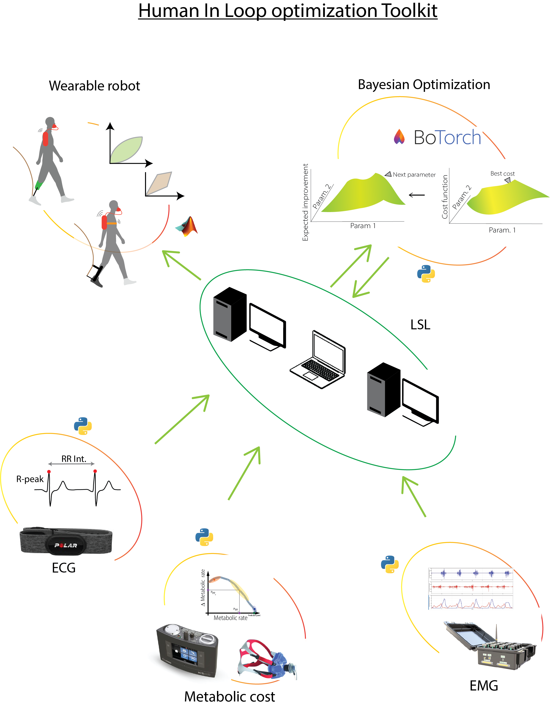

Welcome to the HIL toolbox.#

The main purspose of this is have a all in one toolkit for exoskeleton personalization.
Toolkit has following functionalities ( more added over time)
Data acquisition functions
Cost processing for the following cost functions
RMSSD ( ECG based cost function )
Metabolic cost
Modular Bayesian optimization to minimize or maximize the cost function
Exoskeleton communication using UDP
To setup the module please follow the Install/setup
Overview#
The toolkit is designed to be a modular infrastructure for the human in the loop optimization of exoskeletons.
There are two methods of operation:
CLI / Running in the terminal: Here you will be required to run multiple scripts in the terminal simultaneously to start the data acquisition, cost estimation, and optimization. (require python and pip installed) This is done using the
pythoncommand line interface. More information and ECG examples can be found here. Here you will be required to enter commands such as ‘enter’ or ‘Y’ or ‘N’ when prompted. So Please be mindful of the prompts.API / DOCKER: TODO. Here you will be required to start the docker container and send the data to the docker container using an API. ( Any programming language can be used to send the data to the docker container ) This is an API mode where the data will be streamed into the optimization pipeline hosted in a docker container, the data will be sent using the
FastAPIframework and the input/output will bejsonwithpydanticverififcation.